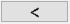
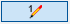
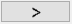

")

Elementübergreifende Änderungsfunktionen, z. B. gleichzeitiges Ändern oder Löschen von Linien, Kreisen und Texten.
|
Achtung: |
|
Änderungen an Zeichenelementen, die Teil einer Bewehrung sind, können zu fehlerhaften Ergebnissen führen, z. B. bei der Berechnung der benötigten Stahlmenge. Verwenden Sie zum Ändern bewehrungsrelevanter Zeichenelemente ausschließlich die in dem jeweiligen Bewehrungsmenü aufgeführten Funktionen. |

|
Tipp: |
|
Gegebenenfalls kann es sinnvoll sein, bestimmte Folien vorher auszublenden. Speichern oder sichern Sie ihre Zeichnung vor umfangreichen Änderungen. |

Funktionen |
Beschreibung |
|---|---|
Stift von Linien, Kreisen und Texten ändern. |
|
Strichtyp von Linien und Kreisen ändern. |
|
Stiftnummer von Texten ändern. |
|
Textgröße in mm angeben. |
|
Textgröße über einen Faktor ändern. |
|
Schriftart ändern. |
|
Breitenfaktor von Texten ändern. |
|
Attribute von Elementen ändern. |
|
Übereinanderliegende Elemente löschen. |
|
Elemente löschen. |
|
Elemente inklusive Maßkettenpunkte löschen. |
|
Außerhalb der Plotfläche liegende Elemente löschen. |
|
Logische Elemente auflösen. |
|
Bewehrung wie in Systemdaten. |
Optionen |
Beschreibung |
|---|---|
|
Auswahl der Stiftnummer. |
   |
Pfeile: Stiftnummer um eins bei jeder Änderung schrittweise vermindern oder erhöhen. Klicken Sie auf die mittlere Schaltfläche um den in der "Auswahl der Stiftnummer" ausgewählten Stift für die Änderung zu verwenden. |
|
Übernahme der Eigenschaft des angeklickten Elementes (z. B. Stiftfarbe, Stiftnummer, Breitenfaktor usw). Abfrage: So wie welches Element? |
|
Elemente hinzufügen / entfernen. |
|
Auswahlrahmen rechteckig / polygonal / einzelne Elemente fangen. |
|
Zuletzt markiertes erneut markieren / automatischer Elementfang. |